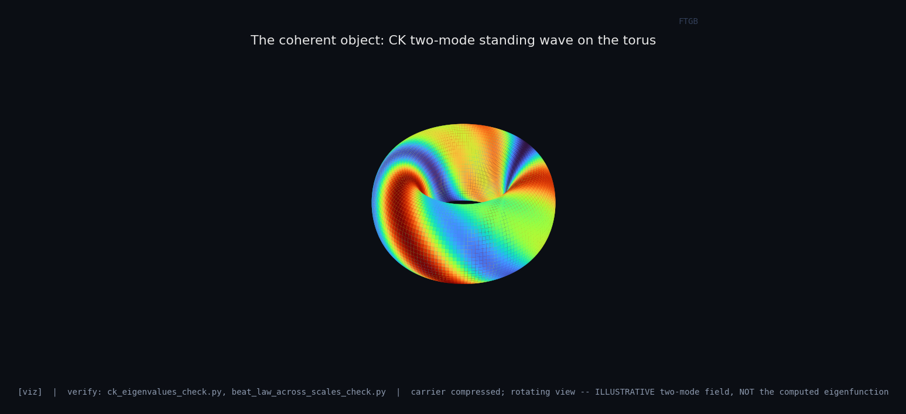
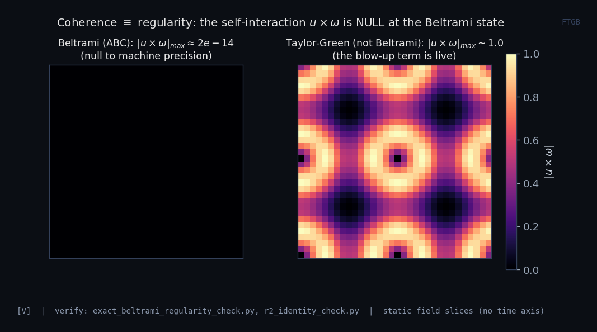
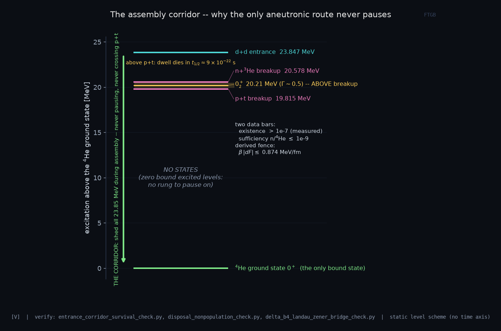
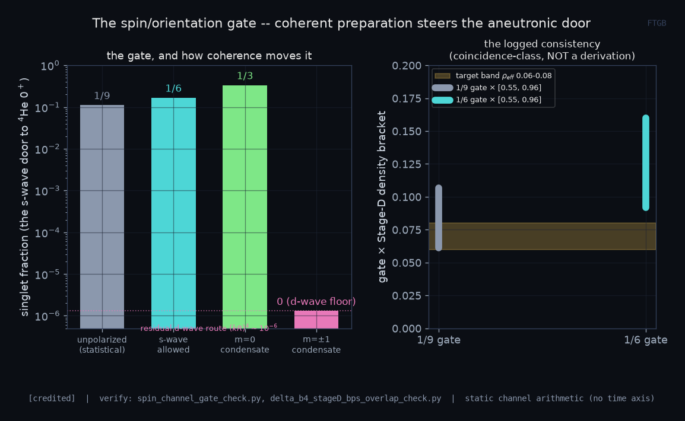
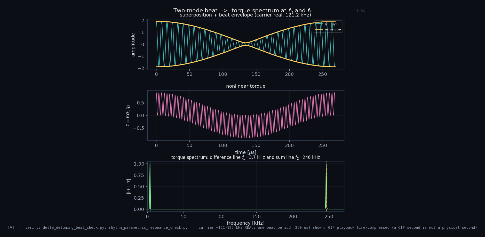
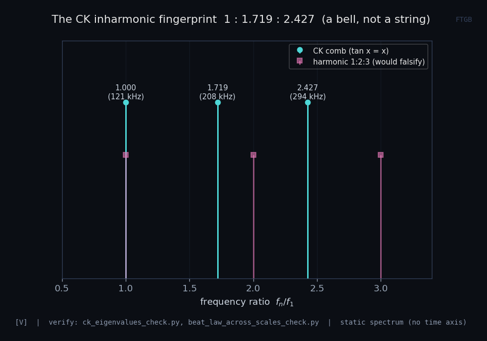
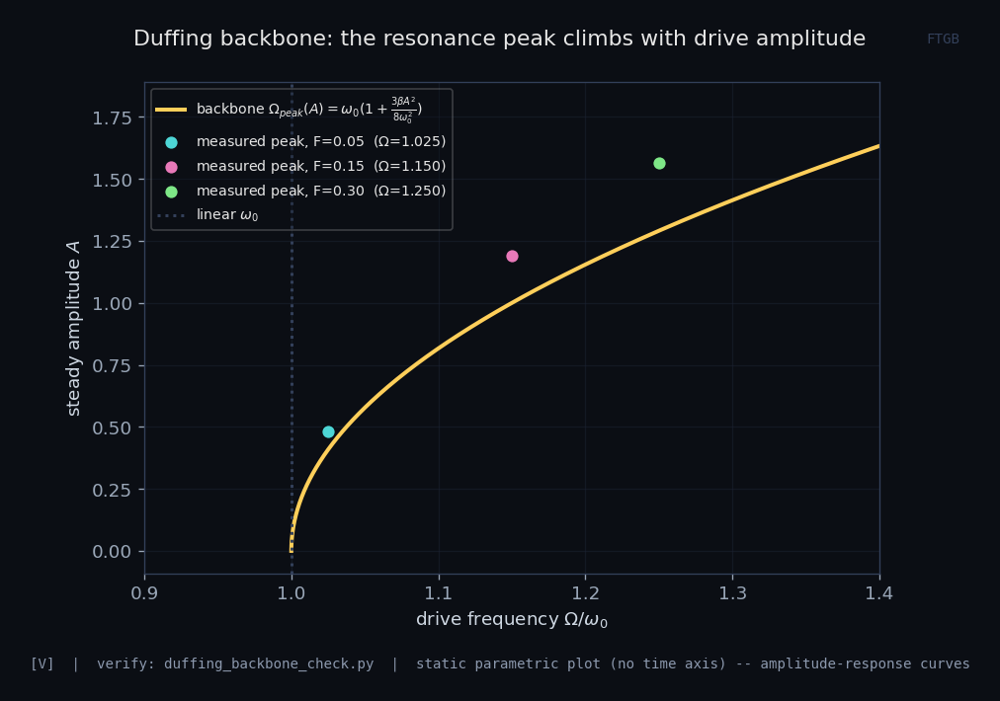

One driven Beltrami–Hopf toroidal soliton, read as field and matter wave. Every artifact below is generated from a verified model — the pipeline is verified numbers → captioned artifacts → interactives, and the honesty tier travels with the pixel.
Reproduce the whole model: python results/verify/verify_all.py → 84/84.






